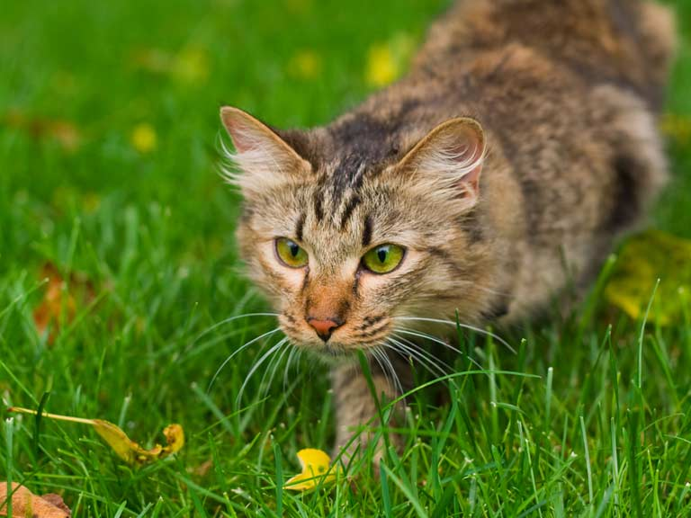
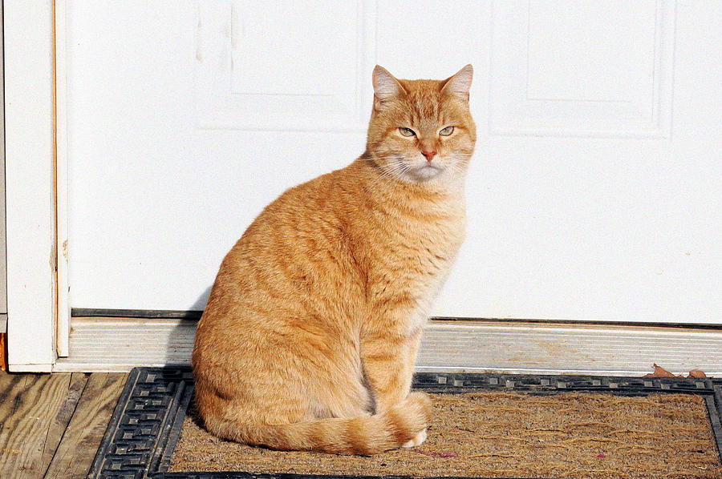
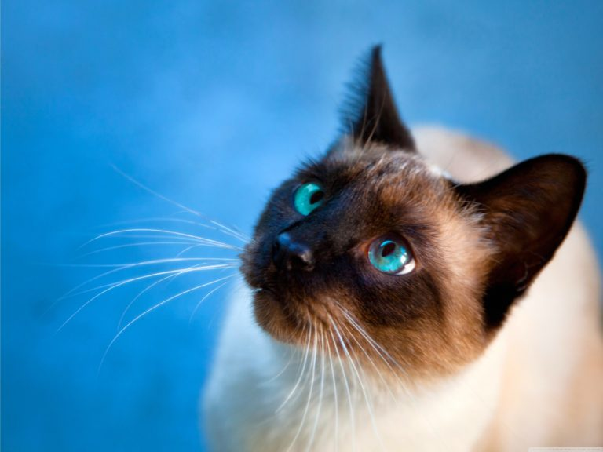
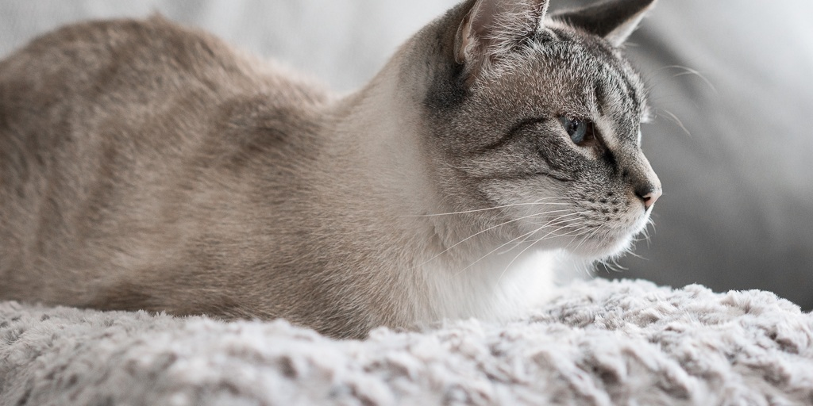

Milo

Milo is a 4-year-old affectionate fur ball. He was adopted 6 months ago and is
now enjoying the company of his new parents and being able to explore the garden while chasing
squirrels. What a character!
Lou

Lou was rehomed one year ago and has been the queen of the house since then. She enjoys
cuddles, cardboard boxes and laser pointers. We can't imagine living without her!
Finley

When we first met him, Finley had been described as a shy cat. Since moving in with us,
Finley has shown a cheekier side - he's always up for some mischief. He's exactly what our
family was looking for!
Cosmo

Cosmo has been an absolute joy in our lives. He's affectionate, cuddly, and loves to play
with our children. We're so thankful to have him in our lives!